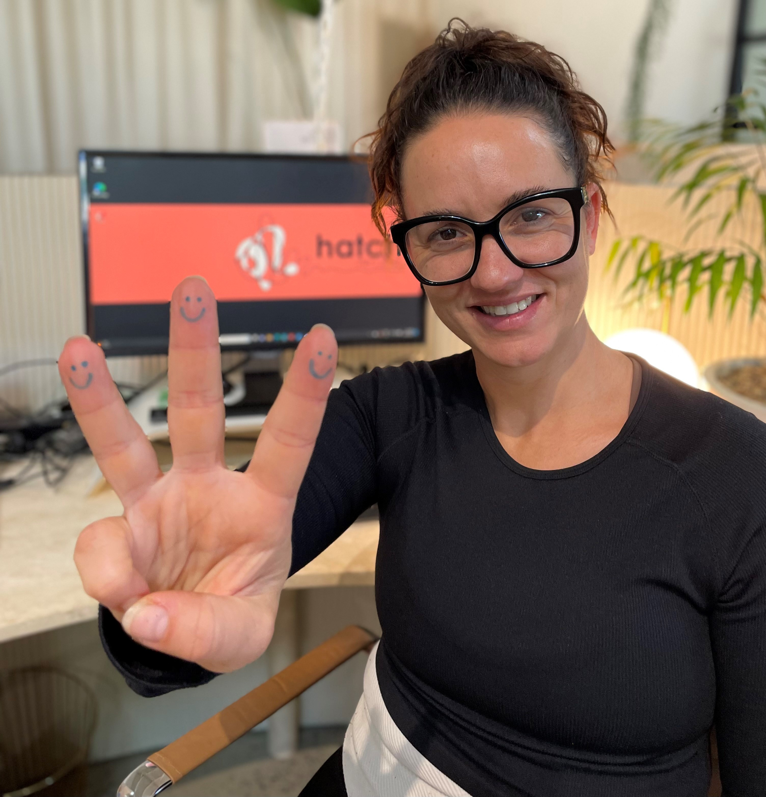

Marcie McGowan
CEO, Founder, DirectorMarcie has dedicated her career to making a difference to the lives of Australia's most disadvantaged children. She's a passionate social justice advocate who isn't afraid to ask the hard questions or get stuck into messy problems. Drawing on 20 years experience working in foster care, Marcie is no stranger to navigating complex systemic dynamics, and believes positive and productive working relationships are key to addressing the sector's most pressing needs.
"Co-founding and leading Hatch Carers has been my most challenging and rewarding professional experience to date. Working amid the quagmire of systemic problems requires a level of perseverance that humbles me daily. Thankfully, it's not a solo effort—leading this initiative is made possible by the dedication and expertise of the team around me."
Marcie holds qualifications in Psychology and Social Impact. She has worked for both large and small OOHC NGOs in various casework and management roles during her 15-year tenure in the NSW OOHC sector.